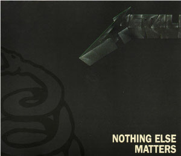
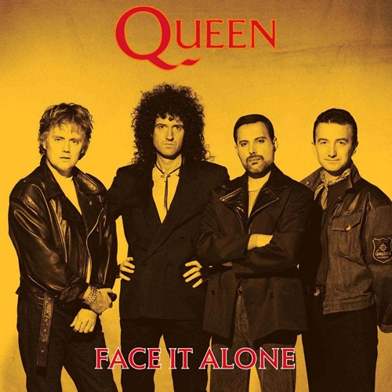
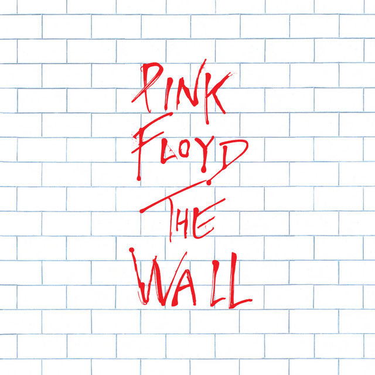

POP,
MUSIC,
TRAP
Rock
Origem
O rock nasceu nos Estados Unidos no final da década de 1940 e início da década de 1950, sendo influenciado por uma variedade de gêneros musicais, como blues, rhythm and blues, gospel e country. Surgiu como uma expressão de rebeldia e juventude, desafiando as normas sociais e raciais da época. Artistas como Chuck Berry, Little Richard e Elvis Presley foram pioneiros na criação do som característico do rock and roll, combinando elementos de diferentes estilos musicais. Com o tempo, o rock se tornou uma das formas musicais mais influentes e populares do mundo, continuando a evoluir e influenciar gerações de músicos e ouvintes.
Elvis Presley

Elvis Presley, o famoso "Rei do Rock and Roll", nasceu em 1935 em Mississippi e alcançou a fama nos anos 50 com sua voz única e sua mistura de estilos musicais. Lançou sucessos como "Heartbreak Hotel" e estrelou filmes populares. Serviu no exército dos EUA e teve um renascimento de carreira nos anos 60. Sua vida pessoal foi frequentemente notícia. Faleceu em 1977, mas seu legado musical perdura.
Kurt Cobain

Kurt Cobain nasceu em 20 de fevereiro de 1967 em Aberdeen, Washington. Filho de um mecânico e uma garçonete, seus pais se divorciaram quando ele tinha nove anos, impactando sua vida. Desde criança, era criativo, sensível e se sentia alienado, buscando conforto na música. Aos 27 anos, fundou o Nirvana com Krist Novoselic, alcançando fama com o lançamento do álbum "Nevermind" e o sucesso do hit "Smells Like Teen Spirit". No entanto, Cobain enfrentou pressões da fama, problemas de saúde e uso de drogas, refletindo em sua música com temas de depressão e desilusão. Sua morte por suicídio em 1994 aos 27 anos deixou um legado duradouro na música e cultura contemporânea.
Freddie Mercury

Freddie Mercury, nascido como Farrokh Bulsara em 1946 em Zanzibar, foi o lendário vocalista da banda Queen, uma das mais icônicas do rock. Sua notável amplitude vocal e carismática presença no palco o tornaram uma figura lendária da música popular. Mercury fundou o Queen em 1970, juntamente com Brian May, Roger Taylor e John Deacon, e juntos criaram sucessos como "Bohemian Rhapsody" e "We Will Rock You". Sua personalidade extravagante e performances inesquecíveis o levaram ao estrelato, mas infelizmente faleceu em 1991 devido a complicações relacionadas ao HIV. Apesar de sua morte prematura, seu legado musical continua influente e sua música é amada por pessoas ao redor do mundo.
twenty one pilots

Twenty One Pilots é um duo musical americano formado em 2009 em Columbus, Ohio, composto pelo vocalista Tyler Joseph e pelo baterista Josh Dun. Eles são conhecidos por sua mistura eclética de estilos musicais, incluindo rock, pop, hip-hop e eletrônica. O grupo ganhou grande popularidade com seu quarto álbum de estúdio, "Blurryface", lançado em 2015, que incluiu sucessos como "Stressed Out" e "Ride". Sua música frequentemente aborda temas de saúde mental, insegurança e existencialismo. As performances ao vivo enérgicas do duo e sua base de fãs apaixonada contribuíram para seu sucesso na indústria musical.
Greta Van Fleet

Greta Van Fleet é uma banda de rock americana formada em 2012, composta pelos irmãos Josh, Jake e Sam Kiszka, juntamente com o baterista Danny Wagner. Originários de Frankenmuth, Michigan, o grupo ganhou fama por seu som reminiscente do rock clássico dos anos 1970, frequentemente comparado ao Led Zeppelin. Desde o lançamento de seu álbum de estreia, "Anthem of the Peaceful Army", em 2018, eles conquistaram fãs em todo o mundo e receberam prêmios, incluindo um Grammy. A banda continua sendo uma figura proeminente no cenário do rock contemporâneo.
Måneskin

A banda italiana de rock Måneskin foi formada em Roma em 2016 e ganhou destaque ao vencer o "X Factor Italia" em 2017. Com seus membros Damiano David, Victoria De Angelis, Thomas Raggi e Ethan Torchio, a banda lançou seu primeiro álbum em 2018. Em 2021, ganharam sucesso mundial ao vencerem a Eurovisão com a música "Zitti e buoni", conquistando fãs com seu rock energético.
Musicas mais tocadas.
Metallica

Nothing Else Matters
26/10/2009
Queen

Face It Alone
13/10/2022
Pink Floyd

Another Brick In The Wall
05/07/2010